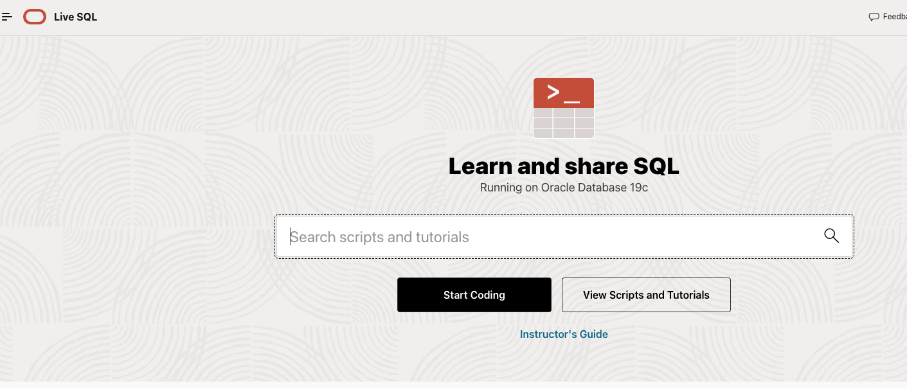
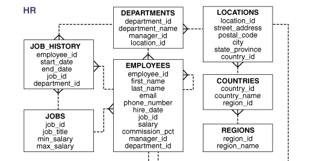
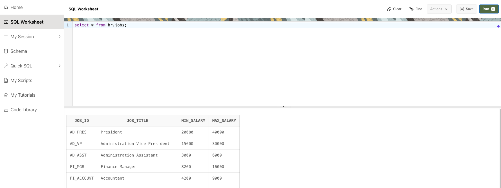
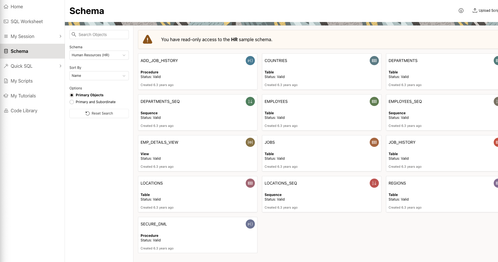

Tutorial 1 - Meet + greet + Software Installation
Warm up
Introduce yourself to your instructor and friends.
Section 1: Sign up and Register for Oracle Live SQL?
Open your web browser and go to the Oracle Live SQL website: Oracle Live SQL.
On the Oracle Live SQL homepage, click the Sign In button located at the top right corner of the page.
If you already have an Oracle account, you can simply enter your login credentials (email and password) and click Sign In. If you do not have an Oracle account, click the Create Account link below the Sign In button.
You will be redirected to the Oracle account creation page. Fill out the registration form with the required information:
- Email Address: Enter a valid email address that you have access to.
- Password: Create a strong password that meets the specified criteria.
- Country: Select your country of residence from the dropdown menu.
- Name: Enter your first and last name.
- Job Title: (Optional) Enter your job title.
- Work Phone: (Optional) Enter your work phone number.
- Company Name: (Optional) Enter your company name.
Review the Oracle Terms of Use and Privacy Policy. If you agree to the terms, check the box indicating your acceptance.
Complete the CAPTCHA to verify you are not a robot.
Click the Create Account button to submit your registration.
After submitting your registration, Oracle will send a verification email to the email address you provided. Check your inbox for an email from Oracle with the subject line “Verify your email address.”
Open the email and click the verification link to confirm your email address. You will be redirected to the Oracle website, and your account will be activated.
Return to the Oracle Live SQL website: Oracle Live SQL.
Click the Sign In button at the top right corner of the page.
Enter your Oracle account credentials (email and password) and click Sign In.
Once signed in, you will be directed to the Oracle Live SQL main interface.
You can now start writing and running SQL and PL/SQL scripts. The interface provides a variety of features, including:
- Script Editor: Write and execute your SQL scripts.
- Sample Scripts: Explore and run sample scripts provided by Oracle to learn SQL and PL/SQL concepts.
- Tutorials: Access educational resources and tutorials to improve your skills.
- Community Sharing: Share your scripts with the community or explore scripts shared by other users.
Exercises
Gol to oracle live and select Start Coding as in the screenshot below.

The database used in this exercise is HR database as in the schema below.

Write a Simple SQL Query:
- In the Script Editor, write a simple SQL query to select all columns from a table. For example:
SELECT * FROM table_name;- Click the Run button to execute the query and view the results.

Play around with the
selectstatement usingHRschema. The tables inHRschema can be accessed via Schema > Choose “Human Resources (HR)” from the dropdown list.

Section 2: Downloading and Installing Power BI Desktop
Power BI Desktop is a powerful data visualization tool that allows you to connect to various data sources, transform data, and create interactive reports. Follow these steps to download and install Power BI Desktop on your computer.
2.1 Downloading Power BI Desktop
Visit the Power BI Website:
- Go to the Power BI website.
Navigate to the Download Page:
- Click on the
Productsmenu at the top of the page and selectPower BI Desktop.
- Click on the
Download the Installer:
Click on the
Download freebutton to go to the Microsoft Store page for Power BI Desktop.If you prefer to download the installer directly (instead of through the Microsoft Store), click on the
See download or language optionslink and choose the version suitable for your operating system.
2.2 Installing Power BI Desktop
Run the Installer:
If you downloaded Power BI Desktop from the Microsoft Store, it will install automatically after you click the
Getbutton.If you downloaded the installer directly, locate the downloaded file (typically a .msi file) and double-click it to run the installer.
Follow the Installation Prompts:
Click
Nexton the welcome screen.Accept the license agreement and click
Next.Choose the installation folder or accept the default path and click
Next.Click
Installto begin the installation process.
Complete the Installation:
- Once the installation is complete, click
Finishto close the installer.
- Once the installation is complete, click
Launch Power BI Desktop:
- After installation, you can launch Power BI Desktop from the Start menu (Windows) or by searching for it in your applications.
2.3 Initial Setup and Configuration
Sign In to Power BI:
- When you first open Power BI Desktop, you may be prompted to sign in. If you have a Power BI account, sign in with your credentials. If not, you can create a new account or skip this step.
Explore the Interface:
Familiarize yourself with the Power BI Desktop interface, which includes the following key components:
Report View: Where you create and arrange visualizations.
Data View: Where you can see your data tables.
Model View: Where you can manage relationships between tables.
Fields Pane: Displays the tables and fields in your data model.
Visualizations Pane: Contains various types of visualizations you can add to your reports.
Connect to Data Sources:
Click on
Get Datain the Home ribbon to connect to a variety of data sources, such as Excel, SQL Server, web data, and more.Follow the prompts to load your data into Power BI Desktop.
Exercises
Connect to a Sample Data Source:
Connect to a sample data source (e.g., an Excel file or a web data source) to practice loading data into Power BI Desktop.
Explore the data in the Data View and create a simple visualization in the Report View.
Section 3: Installing R and RStudio
Installing R
R is a powerful statistical programming language used for data analysis and visualization. Follow these steps to install R on your computer:
Download R:
Go to the CRAN R Project website.
Click on the link for your operating system (Windows, macOS, or Linux).
For Windows: Click on “Download R for Windows” and then click on “base”. Click on the download link to get the installer.
For macOS: Click on “Download R for (Mac) OS X”. Choose the appropriate file for your macOS version and download the installer.
For Linux: Follow the instructions provided for your specific distribution (Debian, Ubuntu, Fedora, etc.).
Install R:
Windows: Run the downloaded .exe file and follow the installation prompts. Accept the default settings unless you have specific requirements.
macOS: Open the downloaded .pkg file and follow the installation prompts.
Linux: Use the terminal and follow the instructions from the CRAN website to add the R repository and install R via your package manager.
Installing RStudio
RStudio is an integrated development environment (IDE) for R that makes coding in R easier and more efficient. Follow these steps to install RStudio:
Download RStudio:
Go to the RStudio website.
Click on the “Download” button under RStudio Desktop.
Choose the installer for your operating system (Windows, macOS, or Linux).
Install RStudio:
Windows: Run the downloaded .exe file and follow the installation prompts.
macOS: Open the downloaded .dmg file and drag the RStudio icon to your Applications folder.
Linux: Open the terminal and follow the instructions provided on the RStudio website to install RStudio via your package manager or download and install the .deb or .rpm package.
Launch RStudio:
- After installation, open RStudio. It should automatically detect your R installation. If it doesn’t, you may need to manually configure the path to the R executable in the RStudio settings.
By completing these steps, you will have both R and RStudio installed on your computer, ready for use in data analysis and visualization tasks.
Section 4: Getting Started with R and RStudio
Now that you have installed R and RStudio, it’s time to get familiar with the environment and start coding.
4.1 Exploring the RStudio Interface
RStudio provides a user-friendly interface that integrates various tools for working with R. Here’s a quick overview of the main components:
Source Pane:
- This is where you write and edit your R scripts. You can open multiple tabs to work on different scripts simultaneously.
Console Pane:
- The console pane is where you can directly enter R commands and see the output immediately.
Environment/History Pane:
The Environment tab shows all the objects (data, variables, functions) currently in your workspace.
The History tab keeps a record of all the commands you’ve entered in the console.
Files/Plots/Packages/Help/Viewer Pane:
The Files tab lets you navigate your file system.
The Plots tab displays plots generated by your R code.
The Packages tab allows you to manage R packages.
The Help tab provides access to R documentation and help files.
The Viewer tab can display web content or documents.
4.2 Running R Code
To run R code in RStudio, you can either type commands directly into the console or write scripts in the source pane. Here’s how to run code in RStudio:
Running Commands in the Console:
Type an R command in the console and press
Enterto execute it.The output will be displayed below the command.
For example, you can type
2 + 3in the console and pressEnterto see the result.
Writing Scripts:
- To write longer scripts or save your code for later use, open a new script file by clicking on
File > New File > R Script.
- To write longer scripts or save your code for later use, open a new script file by clicking on
Exercises
Calculate the Sum of Two Numbers: using R/Rstudio
- 5 * 3 - 7
- (5 * 3) - 7
- 5 * (3 - 7)
Discuss the results, is it as what you expected?
Create a Vector: using R/Rstudio
- Create a vector named
numberswith the values 1, 2, 3, 4, 5. - Calculate the sum of the vector using the
sum()function. - Calculate the mean of the vector using the
mean()function.
- Create a vector named
Create a Data Frame: using R/Rstudio
- Create a data frame named
studentswith the following columns:name,age,gender. - Add the following data to the data frame:
- Name: Alice, Age
- Create a data frame named
Phew….feel overwhelm?
😓The whole exercise is just to make sure you successfully installed all necessary software in your pc. Once you get it install, everything will become easier later on. Having trouble? Please consult your tutor asap.